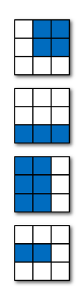
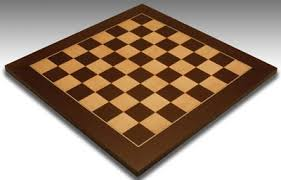

Numpy exercises#
import numpy as np
1: Given the following matrix:
arr_2d = np.arange(0,9).reshape(3,3)
arr_2d
array([[0, 1, 2],
[3, 4, 5],
[6, 7, 8]])
Obtain the following elements (one line for each):
arr_2d[:2, 1:]
array([[1, 2],
[4, 5]])
arr_2d[-1, :]
array([6, 7, 8])
2: Create a matrix of size n x m of all zeros, surrounded by 1s.
n=6
m=8
zeros = np.zeros((n,m))
surrounded = np.ones((n+2,m+2))
surrounded[1:-1, 1:-1] = zeros
surrounded
array([[1., 1., 1., 1., 1., 1., 1., 1., 1., 1.],
[1., 0., 0., 0., 0., 0., 0., 0., 0., 1.],
[1., 0., 0., 0., 0., 0., 0., 0., 0., 1.],
[1., 0., 0., 0., 0., 0., 0., 0., 0., 1.],
[1., 0., 0., 0., 0., 0., 0., 0., 0., 1.],
[1., 0., 0., 0., 0., 0., 0., 0., 0., 1.],
[1., 0., 0., 0., 0., 0., 0., 0., 0., 1.],
[1., 1., 1., 1., 1., 1., 1., 1., 1., 1.]])
3 Create a matrix with a checkerboard pattern. Black squares will be 0, white squares 1.
chess = np.zeros((8,8))
chess[::2, ::2] = 1
chess[1::2, 1::2] = 1
chess
array([[1., 0., 1., 0., 1., 0., 1., 0.],
[0., 1., 0., 1., 0., 1., 0., 1.],
[1., 0., 1., 0., 1., 0., 1., 0.],
[0., 1., 0., 1., 0., 1., 0., 1.],
[1., 0., 1., 0., 1., 0., 1., 0.],
[0., 1., 0., 1., 0., 1., 0., 1.],
[1., 0., 1., 0., 1., 0., 1., 0.],
[0., 1., 0., 1., 0., 1., 0., 1.]])
import matplotlib.pyplot as plt
plt.imshow(chess, cmap="gray")
<matplotlib.image.AxesImage at 0x126267490>
4 Given the following matrix
np.random.seed(101)
arr_2drandom = np.random.randn(4,3)
arr_2drandom
array([[ 2.70684984, 0.62813271, 0.90796945],
[ 0.50382575, 0.65111795, -0.31931804],
[-0.84807698, 0.60596535, -2.01816824],
[ 0.74012206, 0.52881349, -0.58900053]])
a) Subtract from each column the average value of each column
arr_2drandom - arr_2drandom.mean(axis=0)
array([[ 1.93116967, 0.02462533, 1.41259879],
[-0.27185441, 0.04761057, 0.1853113 ],
[-1.62375715, 0.00245797, -1.5135389 ],
[-0.03555811, -0.07469388, -0.08437119]])
b) Substract from each row the average value of each row
arr_2drandom - arr_2drandom.mean(axis=1).reshape(4,1)
array([[ 1.29253251, -0.78618462, -0.50634789],
[ 0.22528387, 0.37257606, -0.59785993],
[-0.09465036, 1.35939198, -1.26474162],
[ 0.51347705, 0.30216849, -0.81564554]])